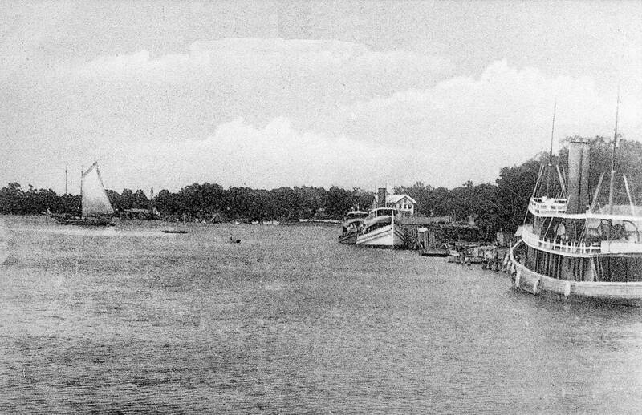

Pascagoula abduction
Mississippi, 1973

Two shipyard workers reported being taken aboard a craft while fishing. 1
Open in the interactive Watcher
Related
Sources
- Pascagoula incident Wikipedia
Mississippi, 1973

Two shipyard workers reported being taken aboard a craft while fishing. 1
Open in the interactive Watcher